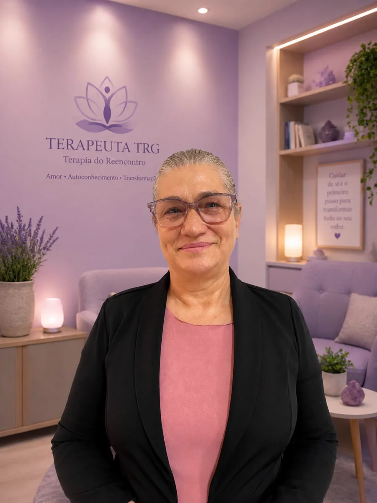
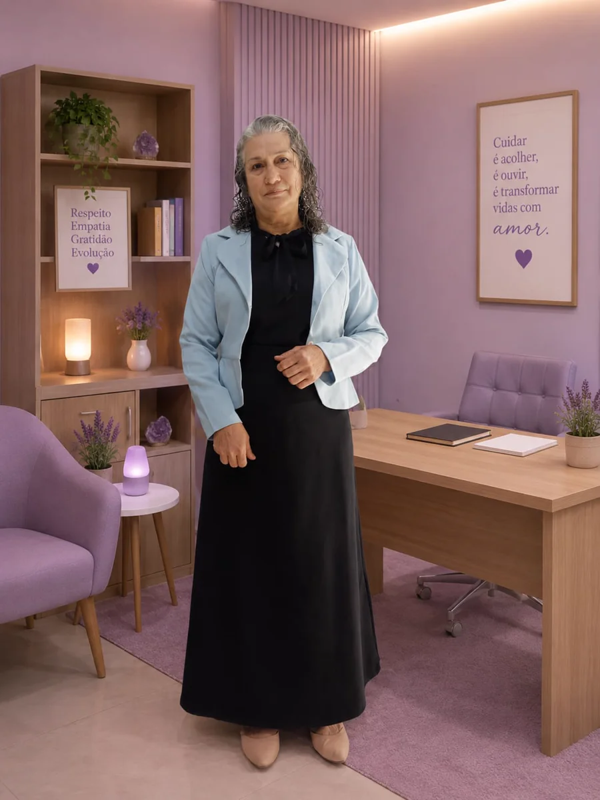
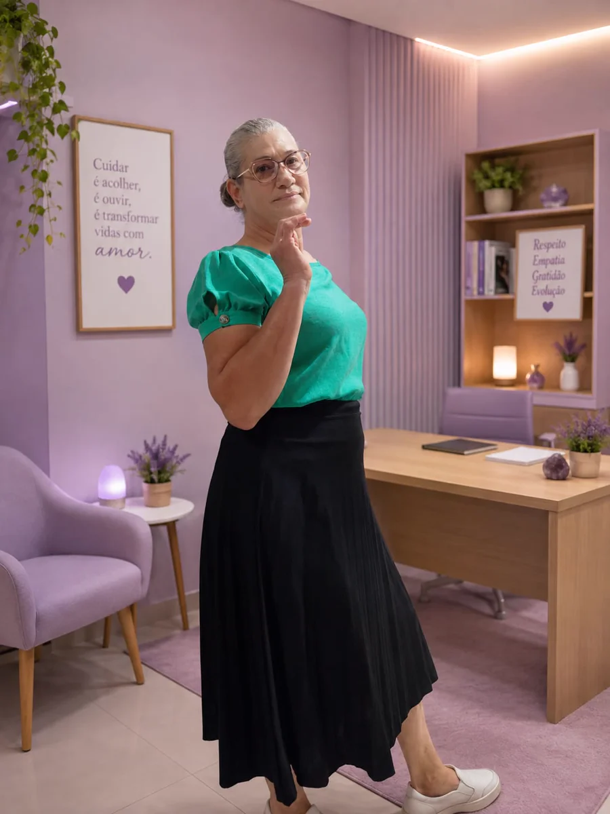

Terapia de Reprocessamento Generativo
Um espaço para cuidar do que você vive.
Atendimento online com Maria Zilda, Terapeuta Master em Terapia de Reprocessamento Generativo.
Online para todo o Brasil Presencial em Cianorte/PR conforme disponibilidade

Um atendimento que começa pela escuta
Nem tudo o que sentimos é fácil de colocar em palavras.
Experiências do passado, medos, inseguranças e padrões emocionais podem pedir um espaço de atenção. A conversa inicial é um convite para entender melhor o seu momento.
A abordagem
O que é a Terapia de Reprocessamento Generativo?
A TRG é uma abordagem estruturada para trabalhar experiências emocionais de forma individualizada. A condução considera a demanda, a história e o momento de cada pessoa.
Dentro do processo, podem ser utilizados protocolos como cronológico, somático, temático, futuro e potencialização.
Entender como funcionaCom clareza, etapa por etapa
Como funciona o atendimento
Cada processo é individual e pode variar conforme a pessoa e a demanda.
- 01
Conversa inicial
Um primeiro espaço para ouvir sua demanda.
- 02
Compreensão
Olhar cuidadoso para o que você está vivendo.
- 03
Condução
Definição do caminho mais adequado ao processo.
- 04
Acompanhamento
O atendimento segue com atenção ao seu momento.
Pode fazer sentido para você
Questões que merecem ser olhadas com cuidado.
Atendimento online
Terapia de onde você estiver.
Com privacidade e praticidade, o atendimento online permite que pessoas de diferentes cidades tenham acesso ao processo. Após o agendamento, você recebe as orientações necessárias.
Falar no WhatsApp
Conheça Maria Zilda
Presença, formação e acolhimento.
Maria Zilda Damacena Carvalho
Terapeuta Master em Terapia de Reprocessamento Generativo
Maria Zilda desenvolve um atendimento individualizado, voltado ao cuidado emocional. Sua formação reúne a certificação Master em TRG e diferentes formações complementares.
Conhecer a formaçãoFormação profissional
Uma formação construída com profundidade.
Conheça as certificações que integram a trajetória profissional de Maria Zilda.
O que é TRG?
TRG é a sigla para Terapia de Reprocessamento Generativo, uma abordagem estruturada para trabalhar experiências emocionais de forma individualizada.
O atendimento é online?
Sim. O atendimento online é prioritário e pode ser realizado por pessoas de diferentes cidades do Brasil.
Como funciona uma sessão?
O processo começa com uma conversa para compreender a demanda e definir a condução adequada para aquele momento.
Quantas sessões são necessárias?
Não há um número fixo. Cada processo varia conforme a pessoa e a demanda.
Como funciona em Cianorte?
O atendimento presencial em Cianorte/PR pode ser realizado conforme disponibilidade, a ser conversada no momento do contato.
Como faço para agendar?
Entre em contato pelo WhatsApp para receber as orientações iniciais.
Um primeiro contato
Quer entender se a TRG pode fazer sentido para você?
Converse com Maria Zilda e tire suas dúvidas sobre a abordagem e o atendimento.
